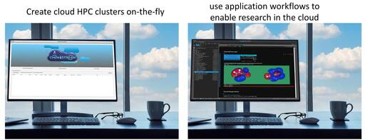

This page gives pointers to software written and maintained by other groups which can be used with SPPARKS.
We think these kinds of tools, whether freeware or commercial, can be very useful. They extend the scope of problems that SPPARKS can model. We are happy to advertise software here, so that SPPARKS users can try it out. Send us an email if you want to add something to the list.
Author: Scott W. Sides (Tech-X Corporation), swsides@txcorp.com
Chemistream provides a streamlined, easy to use framework for managing complex HPC materials simulation workflows on various hardware platforms. The philosophy behind Chemistream is that it makes cloud resources accessible in order to provide small and medium-sized industries with the access they need without having an extensive investment into expensive software or hardware solutions.
Improving the adoption of computational chemistry software is addressed by developing a framework to help streamline complex simulation workflows involving one or more of the following computational methods: molecular dynamics (LAMMPS), quantum chemistry/electronic-structure, molecular docking, kinetic Monte-Carlo (SPPARKS), artificial intelligence (AI), machine learning (ML) and others.
Read the Chemistream documentation for more details.